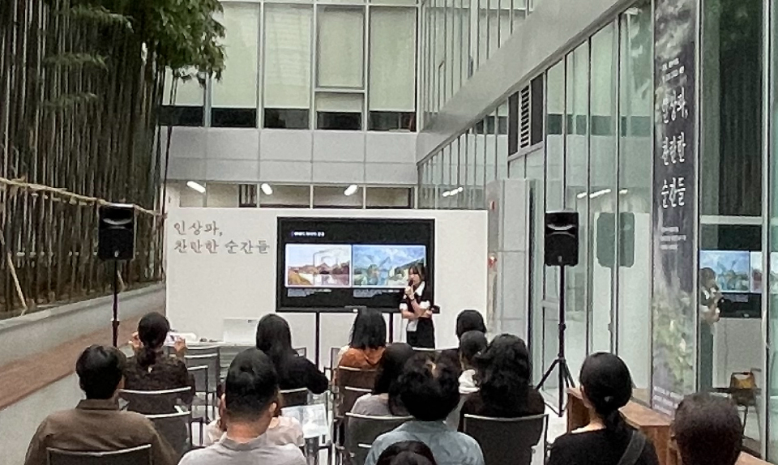
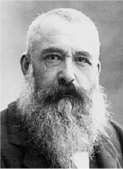
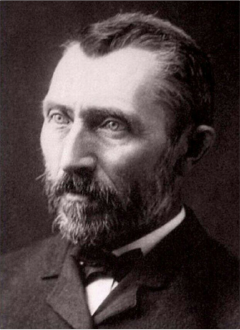
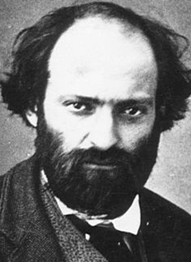
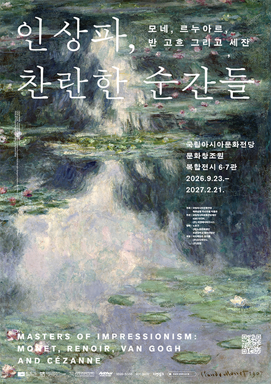

-
Naver
-
Instagram
-
Twitter
-
Facebook
-
Youtube
-
Google
유의사항
2. 전시장 내 음식물 반입 및 애완동물 출입은 금지됩니다.
3. 작품 보호를 위해 작품에 손대지 말고, 적절한 거리를 유지해 주세요.
4. 휴대전화는 진동 모드로 설정해 주시고, 전시장 내 통화는 삼가 주세요.
5. DSLR 카메라, 플래시, 삼각대, 셀카봉 촬영은 금지되며, 큰 가방과 백팩은 반입할 수 없습니다. 휴대전화 촬영 시 타 관람객이 포함되지 않도록 주의해 주세요.
자차 이용
주차장A(B1~B3 / 예술극장 방향)
주차장B(B3~B4 / 어린이문화원 방향)
※ 전시 관람객은 3시간 무료(전시장 출구 앞 테블릿으로 주차 등록 필수)
대중교통 이용
지하철 : 문화전당역에서 하차(5,6번출구) 버스 : 국립아시아문화전당 또는 문화전당역 하차
전남광주 최초 인상주의 미술사조 집중조명 전시
인상주의(Impressionism)는 1870년 무렵 프랑스 파리에서 태동한 19세기를 대표하는 미술 사조입니다. 당시 주류였던 아카데미즘(Academism) 미술의 엄격한 규칙과 경직된
방향성에서 벗어나, 자유분방한 창작 활동을 갈망했던 화가들에 의해 정립됐습니다.
일상적인 소재, 개방적인 작품구도와 독특한 시점, 눈에 보이는 붓놀림과 터치, 시간의 흐름과 위치에 따라 변화하는 빛에 대한 섬세한 묘사를 인상주의 화풍의 도드라진 특징으로 볼 수
있습니다.
초기 프랑스 전통 미술계로부터 거센 비판에 직면하기도 했지만, 예술적 가치를 입증하며 불멸의 작품들을 후대에 남겼습니다.
본 전시는 인상주의 및 후기 인상주의 대표작을 전남광주 최초로 소개합니다.
-
전시 기간
2026. 9. 23.(수) - 2027.2.21.(일)
-
관람 시간
(화,목,금,일) 10:00 - 18:00
(수,토) 10:00 - 20:00
※ 매주 월요일 휴관
※ 매표 및 입장 마감 : 관람 종료 1시간 전 -
전시 장소
문화창조원 복합전시 6관 및 7관
-
관람 요금 및 예매 안내
요금 - 성인 13,000원 / 청소년 · 어린이 10,000원
할인 - 예매처 참고(※ 전남광주통합특별시민 할인내용 상세내용 참고)
예매 - 티켓링크 / 네이버 / 카카오 / NOL티켓
특별전시 해설 프로그램

〈인상파 찬란한 순간들〉을 더욱 깊이 있게 감상하실 수 있도록
전문 도슨트와 함께하는 강연형 스페셜 도슨트 프로그램을 운영합니다.
인상파가 등장한 시대적 배경부터 주요 작가들의 작품 세계와 인상주의의 흐름까지 쉽고 흥미롭게 풀어내며, 관람객 여러분께 더욱 풍성한 전시 경험을 제공합니다.
본 프로그램은 전시해설 전문 기관 온느뮤지엄(Onne Museum)이 운영하며,작품에 대한 전문적인 해설과 관람객과의 소통을 중심으로 진행됩니다.

인상파, 찬란한 순간들
빛이 스며드는 순간, 세계는 인상으로 물든다.
교과서에서 보던 인상파 거장 11인의 원화 작품 전시
인상주의, 후기 인상주의 대표작을 한자리에서 만날 수 있는 전시
-

클로드 모네 (Claude Monet, 1840~1926)
시시각각 변하는 빛의 찰나를 포착해 캔버스에 옮긴 인상파의 창시자입니다. 시간에 따라 다르게 반짝이는 수면과 자연의 색채를 눈부시게 표현해냈습니다.
순간의 빛을 그린 화가
-

빈센트 반 고흐 (Vincent van Gogh, 1853~1890)
강렬한 색채와 붓터치로 인간의 깊은 내면을 시각화해 낸 화가입니다.
내면의 감정을 소용돌이치는 거친 붓터치와 화려한 보색 대비로 표현했습니다.불멸의 천재화가
-

폴 세잔 (Paul Cézanne, 1839~1906)
20세기 입체파와 현대 미술의 문을 연 위대한 선구자입니다.
눈에 보이는 순간의 인상을 넘어, 사물이 가진 변하지 않는 완벽한 구조와 형태를 탐구했습니다.2026-10-07
